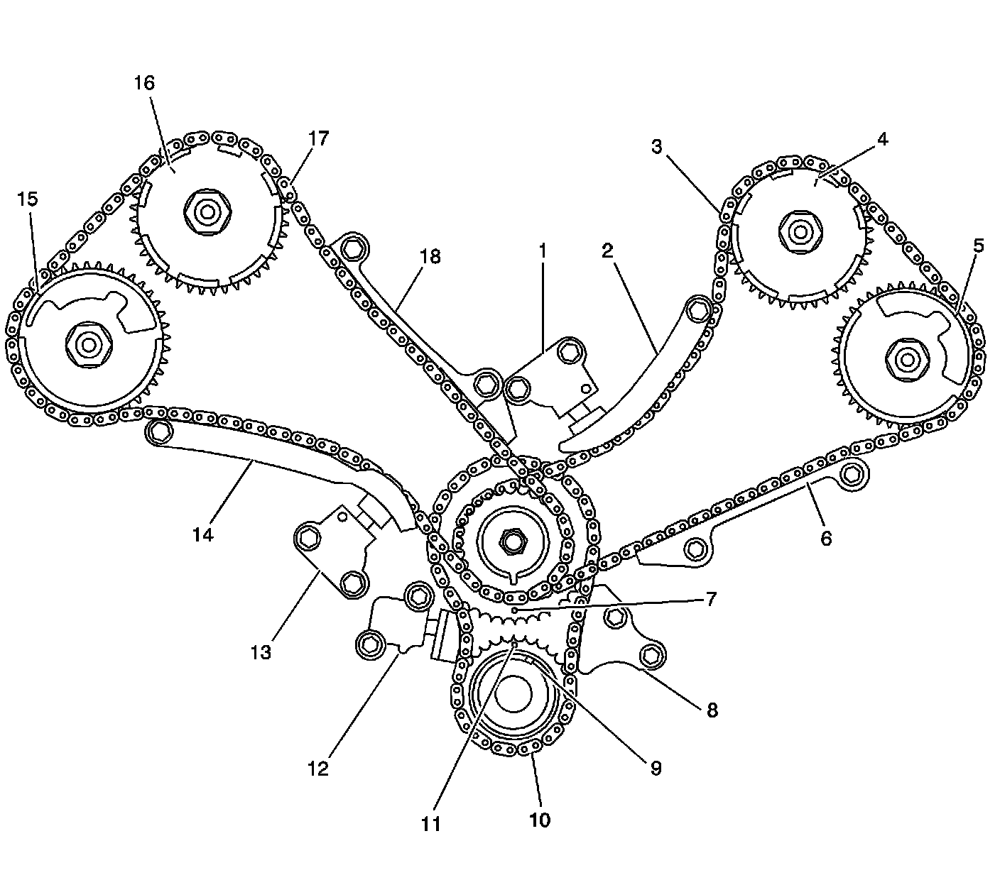

Timing Chain
Camshaft Timing Drive Chain Alignment Diagram
Camshaft Drive System Set at Base Engine Timing
Camshaft Drive System Set at Base Engine Timing:

1 - Left Secondary Timing Chain Tensioner
2 - Left Secondary Timing Chain Shoe
3 - Left Secondary Timing Chain
4 - Left Intake Camshaft Position Actuator Timing Mark
5 - Left Exhaust Camshaft Position Actuator Timing Mark
6 - Left Secondary Timing Chain Guide
7 - Intermediate Position Actuator Timing Mark
8 - Primary Timing Chain Guide
9 - Crankshaft Position Actuator Pin Alignment Slot
10 - Primary Timing Chain
11 - Crankshaft Position Actuator Timing Mark
12 - Primary Timing Chain Tensioner
13 - Right Secondary Timing Chain Tensioner
14 - Right Secondary Timing Chain Shoe
15 - Right Exhaust Camshaft Position Actuator Timing Mark
16 - Right Intake Camshaft Position Actuator Timing Mark
17 - Right Secondary Timing Chain
18 - Right Secondary Timing Chain Guide